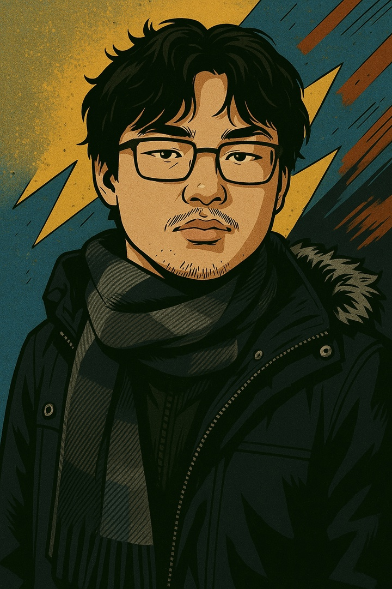

Возраст: 27
Профессия:
Инженер-разработчик
Специализация:
Embedded, Web, App, Science
"Всегда в поиске знаний и новых вызовов!"

Я инженер-разработчик с глубоким опытом в создании встроенных систем и веб-приложений. Люблю разбираться в сложных технических задачах и превращать их в простые и эффективные решения.
Специализируюсь на разработке проектов с использованием микроконтроллеров, таких как Arduino и ESP32, а также создаю современные веб-сервисы на FastAPI и Vue.js.
Помимо этого, активно изучаю машинное обучение и применяю его для автоматизации и оптимизации процессов.
Ценю качество кода, структурированный подход к работе и постоянное развитие. Открыт для новых идей и сотрудничества.
Интересы:
Интернет вещей, машинное обучение, робототехника, автоматизация процессов, новые технологии
"Зачем изобретать велосипед, если есть мотоцикл."
"Человек не может запомнить всё, поэтому он изобрёл рисунки, письменность, книги и компьюте."
"Свой опыт дороже любых денег."
"Владеть может каждый, использовать дано не всем."
"Не умеешь объяснять — рисуй."
Проектирование и разработка встроенных систем для сбора данных и управления устройствами с использованием Arduino, ESP32 и сенсоров.
Опыт работы с MQTT, Modbus, BLE и LoRa для организации надежной коммуникации между устройствами.
Проектирование схем и написание прошивок для микроконтроллеров семейства AVR, ARM, RP2040, а также работа с датчиками и исполнительными механизмами.
Разработка интерактивных пользовательских интерфейсов с использованием Vue.js, создание SPA и компонентов.
Создание адаптивной и кроссбраузерной вёрстки, стилизация с использованием современных возможностей CSS.
Программирование динамичного поведения веб-страниц с применением ES6+ и TypeScript для масштабируемости.
Создание высокопроизводительных REST API с использованием FastAPI, включая асинхронные операции и валидацию данных.
Разработка серверных приложений и API на JavaScript с использованием Express.js и Node.js.
Интеграция с PostgreSQL, SQLite, MongoDB и оптимизация запросов для backend-сервисов.
Разработка скриптов и приложений на Python для обработки данных, автоматизации рутинных задач и интеграции различных систем.
Создание кроссплатформенных мобильных и веб-приложений с использованием современного фреймворка Flutter и языка Dart.
Разработка и обучение моделей машинного обучения для анализа данных, прогнозирования и автоматизации бизнес-процессов.
Использование PyTorch и TensorFlow для создания и обучения нейронных сетей, включая глубокое обучение и reinforcement learning.
Буду рад связаться с вами! Ниже вы найдете мои основные контакты и социальные сети.
Пишите, звоните, или просто следите за моими проектами — всегда открыт для общения и сотрудничества.